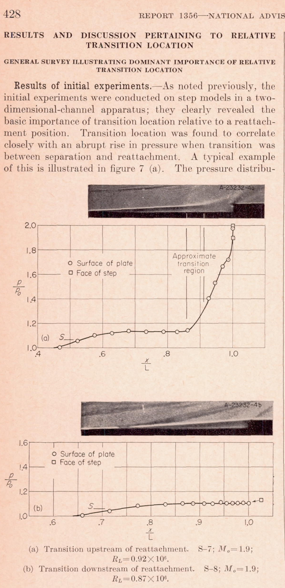
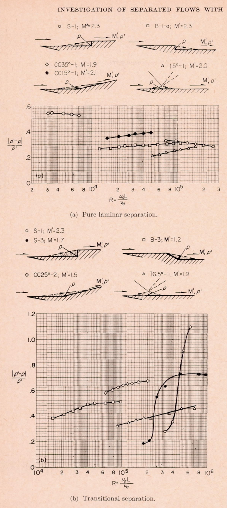
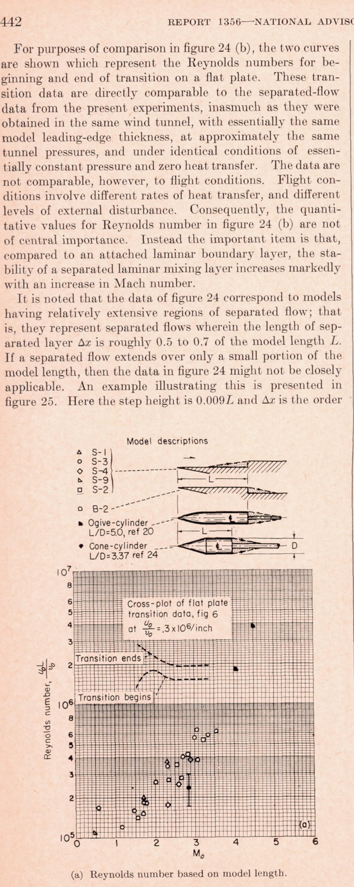
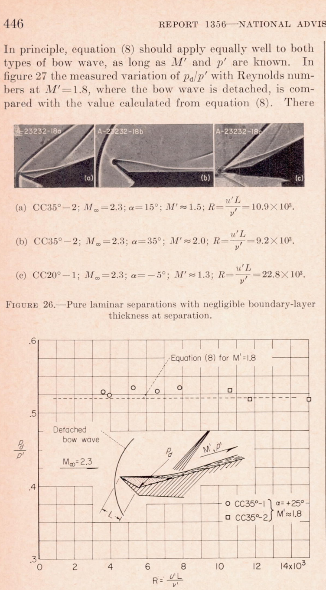

01中文摘要
报告给出台阶、底腔、压缩拐角、曲面、激波-边界层反射以及前缘分离等构型的实验与理论研究结果，重点考察转捩对分离的影响。测量手段包括压力分布、阴影图、高速摄影和油膜显示；测量范围覆盖马赫数0.4～3.6、基于长度的雷诺数4×10³～5×10⁶。报告据此讨论分离区的压力特征、分离判据以及层流、转捩和湍流状态下分离尺度的差异。
原始摘要（英文/原文）
Report presents the results of experimental and theoretical research conducted on flow separation associated with steps, bases, compression corners, curved surfaces, shock-wave boundary-layer reflections, and configurations producing leading-edge separation. Results were obtained from pressure-distribution measurements, shadowgraph observations, high-speed motion pictures, and oil-film studies. The maximum scope of measurement encompassed Mach numbers between 0.4 and 3.6, and length Reynolds numbers between 4,000 and 5,000,000.
02阅读说明
NACA Report 1356（1958），42 页，期刊页 421–460；作者 Dean R. Chapman、Donald M. Kuehn、Howard K. Larson。bundle 共 2245 行，已按 offset/limit 分三段读至文件末尾。扫描 OCR 质量较差（双栏列序错乱、上下标与符号大量丢失），故关键公式另对照原 PDF 第 25–27 页（journal pp.443–445，死区压强理论式 (1)–(10)）与第 31–33 页（pp.449–451，自由干扰分析式 (11)–(19)）图像核读，共 6 页，未超过上限。bundle 图件清单共 16 项，本文选取其中 4 项作为核心证据；其余图件（如 Fig. 2 模型尺寸、Fig. 5 平板转捩 Re、Fig. 8/11/13/14/17 三类 regime 的压强分布、Fig. 22/23/39/41 等）在正文相应位置以页码引用，但未全部列入 figures 数组。Fig. 2 中部分模型长度与角度数值受扫描清晰度限制，已在文中标注。 文章类型：报告
03一句话核心与三句话摘要
以 Mach 0.4–3.6、长度 Reynolds 数 4×10^3–5×10^6 的二维风洞实验，把分离流按转捩相对分离/再附的位置分为纯层流、过渡、湍流三类，并用无经验常数的死区压强理论与自由干扰标度解释其压强规律。
- 文章把每种分离流按转捩相对分离点与再附点的位置分为三类：转捩在再附点下游的“纯层流”、转捩位于分离与再附之间的“过渡”、转捩在分离点上游的“湍流”（p.421 摘要、p.428）。 原文明确
- 通过台阶、压缩角、底压、曲面、入射激波与前缘分离等多种二维构型，在 Mach 0.4–3.6、长度 Reynolds 数 4×10^3–5×10^6 范围内比较三类分离的压强分布、Reynolds 数效应与 Mach 数效应（p.421、p.423–425）。 AI概括
- 作者提出不含经验常数的死区压强理论，并用自由干扰量级分析得到“压强升正比于壁面剪应力平方根”的标度；前者与亚声速、超声速实验及 Roshko、Kawaguti 数据相符，后者对层流分离符合较好、对湍流分离近似成立（p.421 摘要、p.443–450、p.455–456）。 原文明确
04核心内容清单
| 要点 | 类型 | 重要性 | 原文依据 | 属性 |
|---|---|---|---|---|
| 分离流按转捩相对分离点与再附点的位置分为三类：纯层流（转捩在再附下游）、过渡（转捩在分离与再附之间）、湍流（转捩在分离上游）。 | 分类框架 | A | p.421 摘要、p.428 | 原文明确 |
| 对给定模型形状，转捩相对再附与分离的位置是控制压强分布特征的主导变量，其重要性超过 Mach 数与 Reynolds 数的具体数值。 | 核心结论 | A | p.421 摘要、p.428、p.457 | 原文明确 |
| 纯层流分离在超声速下稳定，Reynolds 数影响很小；台阶上呈近常压平台，p_s 与 p_p 约为 p_0 的 1.15 与 1.30 倍。 | 实验规律 | A | p.433–434、Fig. 11 | 原文明确 |
| 过渡型分离在分离处仍为层流，但转捩会在再附前造成更大压升；流动通常非定常，Reynolds 数效应在转捩靠近再附时最显著。 | 实验规律 | A | p.433–438、Figs. 20–21 | 原文明确 |
| 湍流分离的分离压升约为纯层流的 5 倍，不出现死区平台，Reynolds 数影响小，整体比过渡型稳定。 | 实验规律 | A | p.436、Fig. 11(c) | 原文明确 |
| 分离层流混合层的稳定性随 Mach 数显著提高：以 L 为参考的最大纯层流分离 Reynolds 数从亚声速约 6×10^4 增至 M∞≈4 的约 10^6。 | 定量规律 | A | p.441–442、Fig. 24 | 原文明确 |
| 死区压强理论不含经验常数：p_d 由混合层卷吸与再附逆流的质量平衡决定，u*=0.587 与 Re 无关，故 p_d 与 Re、死区形状无关，物体形状只通过 p′ 进入。 | 理论结果 | A | p.443–445、式 (1)–(8) | 原文明确 |
| M′→0 时死区压强差满足 (p_d−p′)/q′=−0.526；该值与楔模型实验、Roshko 低速数据及 Kawaguti Re=40 数值解相符。 | 定量验证 | A | p.445–446、式 (9)–(10)、Figs. 27–29 | 原文明确 |
| 自由干扰分析给出 (p−p_0)/q_0∼√c_f0/(M_0²−1)^{1/4}；定 Mach 数时压升正比于局部摩阻系数的平方根。 | 理论结果 | A | p.449–450、式 (11)–(17a) | 原文明确 |
| 转捩相对再附位置影响压强分布的机制是质量平衡：转捩移到再附上游后，湍流给混合层低速部分注入能量，减少逆送质量，使 p_d 降低、压升增大。 | 机理解释 | B | p.447–448 | 原文明确 |
| 在超声速下，分离压升与诱导分离的方式无关（层流与湍流均如此）；层流平台压升也与构型无关，但湍流峰值压升依赖模型几何。 | 实验规律 | B | p.450–451、p.456–457、Figs. 32、45 | 原文明确 |
| 由于风洞与飞行的相对转捩位置可能不同，同一几何在风洞中为过渡型、在飞行中可能为纯层流型，因此风洞数据不能无条件外推到飞行；高超速下这一风险更大。 | 工程推论 | B | p.438 | AI概括 |
05引言：研究问题与领域缺口
引言从分离的工程危害切入：分离限制翼型最大升力与压气机最大压比，并出现在偏转襟翼、扰流板、过膨胀喷管、钝底、大迎角背风面以及一物体激波打在另一物体边界层上的情形（p.421）。作者回顾：Prandtl（1914）已表明钝体阻力是否受分离强烈影响取决于分离处边界层是层流还是湍流；战后跨声速与超声速风洞实验进一步表明，可压缩流中边界层由层流转为湍流时流场同样显著改变（p.421）。Schiller 与 Link 发现，即使分离处仍为层流，圆柱压强分布也强烈依赖转捩距分离点的远近；Reynolds 数或湍流度使转捩前移，会改变阻力与压强分布，底压后的分离流尤其敏感；Crocco 与 Lees 则显式考虑转捩沿分离层的移动（p.421–422）。作者指出，以往研究多关注“转捩相对分离”的位置，较少关注“转捩相对再附”的位置；只有在很低 Reynolds 数下才能出现转捩位于再附下游、甚至流场中无转捩的纯层流分离，因此再附处条件长期未受重视（p.422）。本文因此分三阶段开展实验：1953 年初始阶段研究二维台阶上 Reynolds 数对分离区的影响；第二阶段扩展到多种模型形状以检验“转捩相对再附”的普遍性；第三阶段在风洞改造后扩展 Mach 数与 Reynolds 数范围，并把亚声速与超声速测量作为整体的一部分（p.422）。全文覆盖三个主题：(1) 按转捩位置分组的实验综述；(2) 再附附近控制死区压强机制的理论与实验检验；(3) “自由干扰”型流动的简化分析与相应实验（p.422）。测量范围达 Mach 0.4–3.6、长度 Reynolds 数 4,000–5,000,000（p.421）。
06流动条件与几何构型
| 项目 | 数值/描述 | 依据 | 备注 |
|---|---|---|---|
| 风洞 | Ames 1- by 3-foot supersonic wind tunnel No. 1（二维试验段） | p.423 | |
| 初始洞压范围 | 2.5–30 psia；Mach 数上限约 2.4 | p.423 | |
| 1955 年改造后洞压范围 | 约 2–60 psia；Mach 数上限约 3.6 | p.423 | |
| 亚声速范围 | 0.4 ≤ M∞ ≤ 0.9，通过下游柔性扩压器壅塞实现 | p.423 | |
| 总 Mach 数范围 | 0.4–3.6 | p.421 摘要 | |
| 总长度 Reynolds 数范围 | R_L = 4,000–5,000,000（以模型长度 L 为参考长度） | p.421 摘要 | |
| 模型与测压孔 | 二维模型；中心展向压力孔间距 0.05 或 0.10 in；常用 Lucite 端板 | p.423–424 | |
| 台阶模型 S-1 至 S-10 | 台阶高 h=0.040–0.300 in；模型长度 L=1.14–6.55 in；L/h=9.1–110.8 | Fig. 2（p.425） | |
| 压缩角模型 CC10° 至 CC35° | 偏转角 θ=10°–35°；L=0.28–5.00 in（部分数值受扫描清晰度限制） | Fig. 2（p.425） | |
| 曲面模型 CS15° 至 CS30° | 偏转角 θ=15°–30°；L=2.63–5.50 in（部分数值受扫描清晰度限制） | Fig. 2（p.425） | |
| 底压模型 B 系列 | B-1、B-2、B-3；其中一个模型含三个串联底，可同时出现三种分离 regime | Fig. 2（p.425）、p.438 | |
| 入射激波模型 | 激波发生器角度 13°–18.5°；M∞=2.3；R_x0=0.20±0.01×10^6 | p.450、Fig. 32 | |
| 平板前缘厚度（转捩 Re 测量） | 约 0.005 in | p.424、Fig. 5 | |
| 边界层 trip | 0.015 in 直径金属丝置于距前缘 0.13 in；高 Mach 数下用锯齿、丝网或前缘楔形 base trip | p.427、Fig. 2(c) | |
| 层流分离压强相关范围 | R_x0=1.2×10^4–1.2×10^6（M∞=2.3 附近） | p.451、Fig. 34 | |
| 湍流台阶实验范围 | M∞=2.0–3.4；R_x0 变化约 7:1；台阶 h 与边界层厚度比变化影响峰值压升 | p.455–456、Figs. 42、46 |
07核心现象与关键参数
| 参数 | 定义 | 数值 | 关系/说明 | 依据 |
|---|---|---|---|---|
| M∞ | 来流 Mach 数 | 0.4–3.6 | 三类 regime 的转捩位置与压升随 M∞ 变化；M∞ 升高时转捩向下游移动 | p.421、p.423、p.438 |
| R_L | 以模型长度 L 为参考长度的 Reynolds 数 | 4×10^3–5×10^6 | 控制纯层流、过渡、湍流三类分离的出现与 Re 效应强弱 | p.421 摘要 |
| R_x0 | 以相互作用起点 x_0 为参考长度的 Reynolds 数 | 层流相关范围 1.2×10^4–1.2×10^6；湍流台阶数据约 0.3–6.0×10^6 | 自由干扰压升按 R_x0^{-1/4} 变化（层流） | p.451、p.456、Figs. 34、45 |
| 洞压 | 风洞试验段参考压强（tunnel pressure） | 初始 2.5–30 psia；改造后约 2–60 psia | 决定单位 Reynolds 数与转捩位置 | p.423 |
| h | 台阶高度或底高 | 台阶模型 0.040–0.300 in | 与边界层厚度之比影响峰值压升；纯层流最大 Re 随 h 与构型变化 | Fig. 2（p.425）、p.456 |
| L | 模型长度（前缘至模型尾端） | 台阶 1.14–6.55 in；压缩角 0.28–5.00 in；曲面 2.63–5.50 in | R_L 的参考长度；纯层流最大 Re 以 L 归一 | Fig. 2（p.425） |
| L/h | 模型长度与台阶高度之比 | 9.1–110.8（台阶模型） | 决定分离区相对模型长度的比例及纯层流最大 Re | Fig. 2（p.425）、p.442 |
| θ | 压缩角或曲面偏转角 | 压缩角 10°–35°；曲面 15°–30°；入射激波模型 13°–18.5° | 决定无黏压升与分离强度 | Fig. 2（p.425）、p.450 |
| p_d | 死区（dead-air）压强 | 由式 (8) 计算；M′=1.8 时 Fig. 27 给出 p_d/p′ 的实验值（具体数值受图轴读取限制） | p_d 与 Re、死区形状无关，只通过 p′ 依赖物体形状 | p.443–445、式 (8)、Fig. 27 |
| p′ | 再附区末端（下游）的终端静压 | 实验中测量；文中未给出统一数值 | 作为 p_d/p′ 的参考压强；物体形状通过 p′ 影响 p_d | p.444–445 |
| M′ | 再附区下游的 Mach 数（混合层外缘等熵流） | Fig. 27 取 M′=1.8；式 (8) 以 M′ 为参数 | M′/M_e=(1−u*²)^{1/2}=0.81 | p.444–445、式 (7)–(8) |
| u* | 混合层分界流线上的速度比 ū/u_e | 0.587（线性温度—黏度关系；表中 0–5 Mach 数近似同值） | 决定 M′/M_e=0.81 与 (p_d−p′)/q′=−0.526 | p.444–445、式 (10) |
| c_f | 局部壁面摩阻系数 | 随 Re_x 变化；层流近似 R_x^{-1/2}，Fig. 31 以 √c̄_f 表示 | 自由干扰压升正比于 √c_f；c̄_f 为相对 Re=10^6 的摩阻比 | p.449–450、式 (17)–(19)、Fig. 31 |
| c̄_f | 给定 Reynolds 数下摩阻与 Re=10^6 时摩阻之比 | 由图 31 给出；层流曲线呈 (Re_x)^{-1/4} 变化 | 定 M_0 时 (p−p_0)/p_0∼√c̄_f，l_I/δ*∼1/√c̄_f | p.450、式 (19)、(17a)、(18a) |
| δ* | 边界层或混合层位移厚度 | 文中未给出统一数值；作为自由干扰的局部尺度 | 式 (11)–(13)、(16)、(18) 的核心尺度；δ*/x_0 与 c_f 相关 | p.449–450 |
| l_I | 自由干扰的流向特征长度 | 文中未给出统一数值 | l_I/δ*∼1/(√c_f0(M_0²−1)^{1/4})；定 M_0 时 ∼1/√c̄_f | p.449–450、式 (13)、(18) |
| Δx | 分离层长度（分离点到再附点，或分离区流向尺度） | Fig. 24 数据对应 Δx≈0.5–0.7L；Fig. 25 小台阶 Δx≈0.3L | 以 Δx 为参考的纯层流最大 Re 随 Mach 数增加 | p.441–442、Figs. 24–25 |
| γ | 比热比 | 1.40（空气） | 出现在死区压强式 (1)–(10) 与自由干扰式 (11)–(17) | p.423 符号表、p.444–450 |
| Pr | Prandtl 数 | 理论取 1 | Busemann 积分与死区温度假设的前提；文中脚注称 Pr=0.72 与 Pr=1 的 p_d/p′ 差别约 0.025 | p.444 脚注 |
08方法与数据
实验在 Ames 1- by 3-foot 超声速风洞 No. 1 中进行。初始阶段洞压限于 2.5–30 psia、Mach 数约 2.4；1955 年改造洞体结构、柔壁喷管与驱动电机后，压力扩展到约 2–60 psia、Mach 数至约 3.6；亚声速 0.4≤M∞≤0.9 通过在下游用柔性超声速扩压器壅塞气流实现（p.423）。所有测量均在二维模型上完成（p.422）。模型包括台阶 S-1 至 S-10、压缩角 CC10° 至 CC35°、底压模型 B 系列（其中一个模型含三个串联底）、曲面 CS15° 至 CS30° 以及入射激波模型；多数模型由基本平板加楔或台阶构成，压力孔位于中心展向，间距 0.05 或 0.10 in，常用透明 Lucite 端板（p.423–425、Fig. 2）。二维性用三项判据校核：展向偏离中心 2 in 的静压变化很小；油膜图案在可观的中心展向范围内垂直于流向；改变端板形状甚至在高 Mach 数下拆除端板都不影响中展向压强分布（p.424）。Mach 数变化方式为：亚声速固定迎角、调节扩压器最小面积；超声速改变迎角（部分模型可达 ±16°）并偶尔重设柔壁，使同一 M∞ 可由前缘膨胀波或激波获得；多数情况下两种方式给出相同的中展向压强分布，但大迎角下脱体弓形波可能使上表面转捩提前（p.424）。转捩位置由阴影法判定：低洞压、小胶片距离时以白色层流线的“终点”为转捩；高洞压或大胶片距离时利用 Pearcey 的折射技术，以白线向表面收敛的起点与终点分别判为转捩开始与结束；采用较长曝光以获得平均转捩位置，并用 2000–6000 帧/秒的高速摄影观察非定常性（p.426–427）。边界层 trip 包括距前缘 0.13 in 的 0.015 in 直径金属丝、锯齿加工、丝网以及前缘楔形 base trip；在高超声速下金属丝常常直到分离前不久才生效，因此有效转捩起点会随洞压漂移（p.427）。分离点用表面油膜法测量：以掠射光观察极薄硅油（Dow Corning DC 200-10）在分离线上的堆积，作者认为其灵敏度高于近壁皮托管（p.427）。理论上，死区压强由“混合层从死区卷吸的质量流与再附区逆压送回的质量流平衡”推出，混合层取相似速度剖面、u*=0.587；自由干扰则由边界层动量方程与外流等熵关系作量级分析（p.443–450）。数据以 p/p0–x/L、分离压升 (p_s−p_0)/q_0、平台压升 (p_p−p_0)/q_0 及按式 (17a)、(18a) 的无量纲坐标相关（p.428–456）。
| 项目 | 内容 | 依据 | 备注 |
|---|---|---|---|
| 风洞与流场 | Ames 1- by 3-foot 超声速风洞 No. 1；初始 2.5–30 psia、M∞≤约 2.4，1955 年改造后约 2–60 psia、M∞≤约 3.6；亚声速 0.4–0.9 由下游壅塞获得 | p.423 | |
| 模型与安装 | 二维平板加台阶/楔/底/曲面；中心展向测压，端板保证二维性；也用无端板的悬臂安装，对比证明无显著差异 | p.423–424 | |
| 二维性校核 | 展向 2 in 偏移处静压变化小；油膜图案在中展向垂直于流向；端板形状改变或高 Mach 数下拆除端板均不影响中展向压强 | p.424 | |
| Mach 数变化 | 亚声速固定迎角、调扩压器最小面积；超声速改变迎角（可达 ±16°）并重设柔壁；同一 M∞ 可由前缘膨胀波或激波实现 | p.424 | |
| 压强测量 | 压力孔间距 0.05 或 0.10 in；记录 p/p_0 沿 x/L 分布、分离压升 (p_s−p_0)/q_0、平台压升 (p_p−p_0)/q_0 | p.423、p.428–456 | |
| 阴影法转捩判定（低压） | 以贴壁白色层流线的终点作为平均转捩位置；较长曝光以获取平均位置 | p.426 | |
| 阴影法转捩判定（高压/大胶片距离） | 用 Pearcey 折射技术：白线向表面收敛的起点为转捩开始、收敛结束为转捩结束；可同时给出转捩区起止 | p.426–427 | |
| 高速摄影 | 2000–6000 帧/秒拍摄阴影场，判断纯层流、过渡、湍流分离的定常性；约 2000 帧/秒即可识别非定常 | p.426 | |
| 表面油膜法 | 极薄硅油（DC 200-10，可混烃油）在分离线堆积；掠射光观察；灵敏度高于近壁皮托管；用于定量分离点与压升 | p.427 | |
| 边界层 trip | 0.015 in 金属丝距前缘 0.13 in；高 Mach 数用锯齿、丝网；第三阶段用前缘楔形 base trip，并以 trip 底压判断是否固定转捩 | p.427、Fig. 2(c) | |
| 死区压强理论 | 层流混合层相似解（u*=0.587）+ 分界流线总压平衡 + 死区卷吸/再附逆流质量平衡；导出式 (1)–(10) | p.443–445 | |
| 自由干扰量级分析 | 外流等熵关系式 (11) 与边界层动量方程式 (14)–(16) 联立，按量级消去 l_I、δ*，得式 (17)–(19) | p.449–450 | |
| 数据相关 | 层流：p_s、p_p 对 R_x0 作图并以式 (17a) 的 √c̄_f 标度检验；再用式 (17a)、(18a) 的特殊坐标使不同构型、不同 Re 的压强分布坍缩（Figs. 34、37） | p.451–452 | |
| 与已有工作比较 | 与 Roshko 低速数据、Kawaguti Re=40 数值解、Korst–Page–Childs 湍流底压理论、Gadd–Holder–Regan 与 Bogdonoff 的激波/台阶数据比较 | p.446–447、p.455–457 |
09核心推导与公式
文章有两条独立推导。第一条针对前缘层流分离的死区压强：把混合层分界流线上的总压与再附区末端静压 p′ 相等，结合 Busemann 能量积分与混合层相似速度比 u*=0.587，导出 p_d/p′ 的显式表达式，并在不可压极限给出压差系数 −0.526。第二条针对自由干扰：由外流等熵关系给出压强与位移厚度增长率的关系，再由边界层动量方程作量级分析，消去干扰长度与位移厚度，得到压升正比于壁面剪应力平方根，并引入相对摩阻 c̄_f 写成式 (17a)、(18a)。
关键假设
- 定常、二维流动（p.443、p.449）
- 纯层流分离，分离处边界层厚度 δ_s=0，混合层速度剖面相似（p.443–445）
- 死区温度取外流总温/恢复温度，Prandtl 数取 1，采用 Busemann 能量积分（p.444）
- 分界流线穿过再附区时压缩等熵，且其总压等于再附区末端静压 p′（p.444–445）
- 死区尺寸远大于混合层厚度，死区压强均匀（p.444）
- 混合层速度比 u*=0.587 与 Reynolds 数、流向位置无关（p.444）
- 自由干扰中外流为二维超声速等熵流，边界层增长缓慢，式 (12) 忽略位移厚度增长的二阶效应（p.449）
- 自由干扰中横向压强梯度远小于流向梯度（对层流成立；对湍流存疑）（p.449）
- 式 (17a)、(18a) 进一步取 M_0 恒定，并定义 c̄_f 为相对 Re=10^6 的摩阻比（p.450）
推导过程
设外流为速度 u_e、Mach 数 M_e、静压 p_e 的均匀流，与压强 p_d=p_e 的死区通过混合层相接。分界流线上的总压 p_t 既可按外流等熵条件表示，也可按死区条件表示，由此得到式 (1)。下一步再把该总压与再附区末端静压 p′ 相等。
把式 (1) 中的总压取为 p′，解出 p_d。此式表明，只要分界流线上的 M̄ 已知，p_d 就由 p′ 与 M̄ 唯一决定。
取死区温度等于外流总温（Pr=1 时亦即恢复温度），Busemann 能量积分把分界流线上的 M̄ 与速度比 ū/u_e、外流 M_e 联系起来。混合层相似解给出 ū/u_e=u*=0.587，且该值在 0–5 Mach 数范围近似不变。
将式 (4) 代入式 (2)，得到 p_d/p′ 仅依赖 M_e 与 u* 的表达式。由于 u* 与 Reynolds 数无关，p_d 也与 Reynolds 数无关；物体形状只通过 p′ 进入。
层流黏性层外缘平滑，尾激波不在该层内形成，故外缘流动等熵。用等熵关系把 p′/p_e 与 M_e、M′ 联系；再由式 (5) 与式 (6) 合并，得到 M′²=(1−u*²)M_e²，即 M′/M_e=0.81。
把式 (7) 代回式 (5)，把 p_d/p′ 写成只含 M′ 与 u* 的显式方程。该式即死区压强理论的主结果，适用于亚声速与超声速、且不含经验常数。
令 M′→0 取极限，并用 q′=γp′M′²/2，得到 (p_d−p′)/q′ 的极限。代入 u*=0.587 得 −0.526。该值与 Kawaguti 的 Re=40 数值解（−0.55）及 Roshko 低速数据相符。
若压强由边界层与外流自由干扰局地决定，则外流等熵关系给出 p=p_inviscid+(ρ_e u_e²/√(M_e²−1))dδ*/dx。该式对层流与湍流均适用；在无黏压强近似常数或远小于干扰项的区域内可简化。
在无黏压强为常数的自由干扰区，式 (11) 化为 (p−p_0)/q_0=(2/√(M_0²−1))dδ*/dx。下标 0 表示相互作用起点，即上游压强仍等于无黏值的最后一点。
设 l_I 为自由干扰的流向特征长度，对式 (12) 作量级估计得式 (13)。另一方面，边界层动量方程在壁面处化为 dp/dx=(∂τ/∂y)_w（式 15）；对式 (15) 作量级估计得式 (16)。两式把 p−p_0、δ*、l_I、τ_w0 联系起来。
联立式 (13) 与式 (16) 消去 l_I 与 δ*，并用 c_f0=τ_w0/q_0，得 (p−p_0)/q_0∼√c_f0/(M_0²−1)^{1/4}。定 M_0 时，因 q_0=γp_0M_0²/2，压升与 p_0 之比正比于 √c̄_f。
由式 (13) 与 (16) 还可解出 l_I/δ*∼1/(√c_f0(M_0²−1)^{1/4})。引入 c̄_f=(c_f0)/(c_f0)_{Re=10^6} 后，定 M_0 时 l_I/δ*∼1/√c̄_f。√c̄_f 随 Reynolds 数的曲线由图 31 给出：层流呈 R_x^{-1/4}，湍流按 Kármán–Schoenherr 关系。
适用边界：死区分支要求定常二维纯层流、δ_s=0、Pr=1、分界流线压缩等熵、分界流线终点取 p′ 而非再附点 p_R，且 u*=0.587 只对相似速度剖面成立；有限 δ_s 时必须解黏流偏微分方程，u* 不再固定。η 因子的引入承认实际压缩有效率损失，但 η 未给出。自由干扰分支是量级分析，省略 O(1) 因子与跨层密度变化引起的 Mach 数因子；式 (12) 要求边界层增长缓慢；式 (15) 要求横向压强梯度远小于流向梯度，这对层流可以、对湍流存疑。两分支都不能独立预测 p′，实验验证也限于二维、有限 Mach 数与 Reynolds 数范围。
10结果：主要发现与关键证据
实验首先确立三类 regime 的压强特征。纯层流分离（转捩在再附下游）在台阶上呈现近常压平台，代表死区；在 M∞=2.3 的台阶上，分离点压强 p_s 与平台压强 p_p 分别约为分离区上游压强 p_0 的 1.15 倍与 1.30 倍，台阶面压强通常等于死区压强，高速摄影显示流动相当稳定（p.433–434、Fig. 11）。过渡型分离（转捩在分离与再附之间）在分离处仍为层流，p_s 与纯层流相近，但转捩会在再附前造成更大的压升；台阶面压强变化可达约 0.1p_0，说明逆流区存在可观亚声速速度，且转捩—再附之间流动非定常（p.433–434）。湍流分离（转捩在分离上游）的分离压升约为纯层流的 5 倍，不出现死区平台，流动相对过渡型更稳定，但压缩角在接近脱体激波时仍可能非定常（p.436）。约 170 个低压案例与约 95 个高压案例表明，转捩位置常与“压强突然上升”重合，亚声速与超声速同样成立；但转捩远在再附上游且刚过分离时可在近常压混合层中发生而不伴随突升，薄层流再附层本身也可造成假突升（p.428–431、Figs. 7–10）。Reynolds 数效应按 regime 分化：纯层流分离只微弱受 Re 影响，图 20(a) 中多数曲线变化至多约 1/4 次幂，且边界层厚度在分离处可忽略者几乎无 Re 依赖；过渡型分离在转捩靠近再附时对 Re 极敏感，曲面模型在 Re=0.16–0.81×10^6 内压阻可变化约 4 倍；湍流分离的 Re 效应小或可忽略（p.436–438、Figs. 20–22）。Mach 数效应表现为：随 M∞ 升高，转捩向下游移动；M∞=1.3 时分离层不稳定、转捩靠近分离、平台以上压升大，M∞=3.3 时分离层稳定、转捩靠近再附、压升小（p.438、Fig. 23）。纯层流分离的最大 Reynolds 数随 Mach 数显著增加：以模型长度 L 为参考的 (u_0L/ν_0)max 在亚声速约 6×10^4，至 M∞≈4 约 10^6；以分离层长度 Δx 为参考时趋势相同，说明层流混合层稳定性随 Mach 数显著提高（p.441–442、Fig. 24）。理论方面，死区压强式 (8) 给出 p_d/p′ 仅依赖 M′ 与 u*=0.587，与 Re、死区形状无关，物体形状只通过 p′ 进入；M′→0 时 (p_d−p′)/q′=−0.526；Fig. 27 表明楔模型前缘层流分离的 p_d/p′ 在 M′=1.8 时几乎不随 Re 变化，且与式 (8) 计算值相符；Fig. 28 在 M∞=1.3–2.0 范围同样符合，Roshko 的低速数据与 Kawaguti 的 Re=40 数值解（−0.55）也接近（p.445–446、Figs. 27–29）。自由干扰分析给出 (p−p_0)/q_0∼√c_f0/(M_0²−1)^{1/4}，定 M_0 时 (p−p_0)/p_0∼√c̄_f；层流分离的分离压升与平台压升在 Re_x0=1.2×10^4–1.2×10^6 内按该标度相关良好（Fig. 34），不同构型在特殊坐标下坍缩（Fig. 37）；湍流分离的压升对 √c̄_f 只是近似成立，台阶峰值压升随 Re 略降，但并非所有模型都如此，作者承认存在未解释的分散（p.450–456、Figs. 41–46）。
| 发现 | 证据 | 证据类型 | 强度 | 位置 | 属性 |
|---|---|---|---|---|---|
| 分离流可按转捩相对分离与再附的位置分为纯层流、过渡、湍流三类，三类在压强分布、定常性与 Reynolds 数敏感性上系统不同。 | p.421 摘要给出分类定义；p.428 给出“三种 regime 在多数模型形状上均被观察到”的表；p.433–436 以 Fig. 11 的台阶压强分布逐类描述。 | 分类结果 | 强 | p.421、p.428、p.433–436 | 原文明确 |
| 对给定模型形状，转捩相对再附的位置是控制压强分布特征的主导变量，其影响超过 Mach 数与 Reynolds 数的具体取值。 | 摘要明确称“principal variable controlling pressure distribution ... was found to be the location of transition relative to the reattachment and separation position”；p.428 以 Fig. 7 的两种转捩位置对比说明；p.457 结论第 1 条重复。 | 核心结论 | 强 | p.421、p.428、p.457 | 原文明确 |
| 纯层流分离在超声速下稳定，Reynolds 数影响很小；台阶上呈近常压平台，p_s、p_p 分别约为 p_0 的 1.15 与 1.30 倍。 | p.433–434 给出台阶 M∞=2.3 的数值；p.436 与 Fig. 20(a) 表明纯层流分离的 Re 效应至多约 1/4 次幂，边界层厚度可忽略时几乎无 Re 依赖；高速摄影显示其稳定。 | 实验规律 | 强 | p.433–434、p.436、Fig. 20(a) | 原文明确 |
| 过渡型分离通常非定常，Reynolds 数效应显著，且当转捩靠近再附时压升对 Re 最敏感；转捩位置常与压强突然上升重合。 | p.430–434 描述约 170 与 95 个案例的相关及例外；p.436–438 与 Fig. 20(b)、Fig. 21(b) 表明曲面模型压阻在 Re=0.16–0.81×10^6 内可变约 4 倍，且靠近再附时变化最大。 | 实验规律 | 强 | p.430–438、Figs. 20(b)、21(b) | 原文明确 |
| 湍流分离的分离压升约为纯层流的 5 倍，不出现死区平台，Reynolds 数影响小，整体比过渡型稳定。 | p.436 明确给出“about five times larger”；p.436 与 Fig. 20(c) 表明湍流分离的 Re 效应小或可忽略；p.436 说明湍流涡运动给死区充能，故无平台。 | 实验规律 | 强 | p.436、Fig. 20(c) | 原文明确 |
| 分离层流混合层的稳定性随 Mach 数显著提高，纯层流分离的最大 Reynolds 数从亚声速约 6×10^4 增至 M∞≈4 的约 10^6。 | p.441–442 与 Fig. 24(a)(b) 给出以 L 和以 Δx 为参考的两组数据；p.442 引 Lin 的中性稳定性计算（M>2.5 完全稳定）作为旁证；摘要与结论第 5 条重复该趋势。 | 定量规律 | 强 | p.441–442、Fig. 24、p.457 | 原文明确 |
| 无经验常数的死区压强理论给出 p_d/p′ 仅依赖 M′ 与 u*=0.587，故 p_d 与 Re、死区形状无关；M′→0 时 (p_d−p′)/q′=−0.526。 | p.443–445 推导式 (1)–(10)；p.445–446 与 Figs. 27–29 表明楔模型实验、Roshko 数据与 Kawaguti 数值解均与理论相符；p.421 摘要强调“involves no empirical information”。 | 理论验证 | 强 | p.443–446、式 (8)–(10)、Figs. 27–29 | 原文明确 |
| 自由干扰区压升正比于壁面剪应力平方根：层流数据在 R_x0=1.2×10^4–1.2×10^6 内按 (p−p_0)/q_0∼√c_f0/(M_0²−1)^{1/4} 相关，湍流数据近似成立。 | p.449–451 推导式 (17)–(19)，p.451 与 Fig. 34 给出层流相关；p.455–456 与 Figs. 42–44 表明湍流近似但存在分散；摘要称“substantiates ... accurately for laminar, approximately for turbulent”。 | 理论验证 | 强 | p.449–456、式 (17a)、Figs. 34、42–44 | 原文明确 |
| 在超声速下，分离压升与诱导分离的方式无关；层流平台压升也与构型无关，但湍流峰值压升依赖模型几何（尤其 h/δ*）。 | p.450–451 与 Fig. 32 显示台阶、压缩角、曲面、入射激波在 M∞=2.3、R_x0=0.20×10^6 下压强分布重合；p.456–457 结论第 7 条区分层流平台与湍流峰值；p.456 与 Fig. 46 把湍流峰值分散归因于台阶高与边界层厚度比。 | 实验规律 | 中 | p.450–451、p.456–457、Figs. 32、46 | 原文明确 |
| 转捩相对再附位置影响压强的机制可用死区质量平衡解释：转捩移到再附上游后，湍流给混合层低速部分注入能量，减少逆送质量，使 p_d/p′ 降低、压升增大。 | p.447–448 给出 m_scav 与 m_rev 两条曲线、平衡交点及转捩移动后曲线变化的定性论证；p.430–436 的实验趋势与该解释一致，但文中未直接测量质量流。 | 机理解释 | 中 | p.447–448 | 原文明确 |
11机制解释与论证链
死区压强的核心机制是质量平衡。分离后的层流混合层以相似速度剖面从死区卷吸质量 m_scav；再附区的逆压把低总压流体送回死区，记为 m_rev。稳态时 m_scav=m_rev，其交点决定 p_d。分界流线在分离处与再附处都必须是分界流线，否则死区质量会持续增加或减少；因此分界流线上的总压必须等于再附区末端的静压 p′。层流混合层的速度比 u*=0.587 与 Reynolds 数无关，故 p_d 与 Re、死区尺寸无关，物体形状只通过 p′ 影响 p_d。当转捩发生在再附下游时，混合层保持层流相似，p_d/p′ 基本不变；当转捩移到再附上游时，湍流把外流能量输送给混合层低速部分，使同样压比下被逆送的质量减少，m_rev 曲线下移，新的平衡使 p_d/p′ 显著降低，宏观表现为再附区压升突然增大。这就是“转捩相对再附位置”控制压强分布的物理原因。另一方面，在自由干扰区，边界层排移厚度改变外流有效型面：p=p_inviscid+(ρ_e u_e²/√(M_e²−1))dδ*/dx；排移增长与壁面剪应力通过边界层动量方程耦合，量级分析消去特征长度后得到压升正比于 √τ_w，即 √c_f。因此只要流动由自由干扰控制，压强分布就与诱导分离的具体几何无关，只随局部摩阻与 Mach 数变化。
12讨论：结论、贡献与局限
作者把“转捩相对再附”的重要性归因于再附区的质量平衡：混合层从死区卷吸质量 m_scav，再附压升把低总压流体逆送回来 m_rev；稳态时二者相等，交点决定 p_d。若转捩位于再附下游，混合层相似、u* 与 Re 无关，故 p_d 与 Re 基本无关；若转捩移到再附上游，湍流把外流能量输送给混合层低速部分，使同样压比下需要逆送的质量减少，m_rev 曲线下移，新的平衡 p_d/p′ 显著降低，宏观上表现为压升突然增大（p.447–448）。这解释了为何在台阶、压缩角、曲面、底压与入射激波等完全不同的分离方式中，只要转捩相对再附的位置相同，压强分布就相似；也解释了亚声速与超声速流动的共性（p.430、p.448）。作者进一步区分亚声速与超声速：亚声速分离区近处的压强主要由物体几何决定的无黏压强分布控制，边界层—外流干扰是次要的；超声速分离区近处的压强则主要由与 Reynolds 数有关的自由干扰控制，无黏压强分布反而次要（p.448–449）。在工程意义上，这意味着风洞模拟飞行分离流时必须匹配“相对转捩位置”；若相对位置相同，转捩的精确位置并不关键，但过渡型分离中转捩位于分离与再附之间时，精确位置就很重要（p.438）。高超速下分离层更稳定，转捩常靠近再附，风洞与飞行可能分别处于过渡型与纯层流型，因而相对位置匹配尤其重要（p.438）。作者也讨论了与 Crocco–Lees、Korst–Page–Childs、Gadd 等工作的关系：死区压强的基本质量平衡思想一致，但本文指出 Crocco–Lees 把尾迹总厚度作为控制量可能不妥，附录 B 的楔形插入物实验表明 H（台阶高）才是特征长度（p.447、p.459）。
作者结论
在“边界层前缘压强基本恒定、二维分离区”的实验范围内，作者给出七条结论（p.457）：(1) 对给定模型形状，转捩相对再附与分离的位置是控制压强分布特征的主导变量，据此把分离流分为纯层流、过渡、湍流三类。(2) 纯层流分离（转捩在再附下游）在超声速下稳定，仅较弱依赖 Reynolds 数；分离处边界层厚度可忽略时，死区压强可由不含经验常数的简单理论计算，该理论对亚声速与超声速均适用。(3) 过渡型分离（转捩在分离与再附之间）通常非定常，常显著依赖 Reynolds 数；转捩处常出现压强突然上升，尤其当转捩距再附很近时。(4) 湍流分离（转捩在分离上游）只较弱依赖 Reynolds 数，且比过渡型稳定。(5) 分离层流混合层的稳定性随 Mach 数显著提高；因此纯层流分离在亚声速罕见，在高超速可能具有实际意义，值得进一步研究。(6) 在自由干扰区，简单分析表明压升随壁面剪应力平方根变化；超声速实验对层流分离准确证实该结果，对湍流分离近似成立。(7) 在超声速下，层流与湍流分离的“分离压升”均与诱导方式无关；层流平台压升也与构型无关，但湍流峰值压升显著依赖模型几何。总体而言，文章把“转捩相对再附”提升为与“转捩相对分离”并列的基本变量，并用死区压强理论与自由干扰标度给出可检验的定量框架（p.421、p.443–450、p.457）。
局限与未解决问题
（1）实验均为二维、且分离区上游边界层压强基本恒定；作者明确说对强顺压或强逆压边界层历史，部分结论可能不适用（p.457）。（2）Mach 数 0.4–3.6、长度 Reynolds 数 4×10^3–5×10^6 的范围有限；飞行条件涉及不同热传递与外部扰动，作者明确说 Fig. 24 的定量 Re 值“并非核心”，不能直接外推到飞行（p.442）。（3）转捩本身难以控制与预测；在 Mach≈3 时金属丝 trip 常常直到分离前不久才生效，有效转捩起点随洞压漂移，相关 Re 数据因此不确定（p.427）。（4）死区压强理论假设定常、二维、纯层流、分离处边界层厚度为零、Pr=1、分界流线压缩等熵、分界流线终点取 p′ 而非再附点 p_R；u*=0.587 仅对相似速度剖面成立。若分离处边界层厚度可观，需对每个案例解黏流偏微分方程，u* 不再是 0.587（p.444–445）。（5）自由干扰分析是量级分析，省略了 O(1) 因子与跨边界层密度变化带来的 Mach 数因子；对湍流，横向压强梯度与流向梯度同量级，边界层方程在壁面处的适用性存疑（p.449–450）。（6）理论不能独立预测 p′，必须由外流/几何给定；死区压强只通过 p′ 依赖物体形状（p.444–445）。（7）湍流分离的峰值压升数据分散，Fig. 42 在高 Mach 数下与 √c_f 标度有偏离；作者承认不同模型（如 S-5）趋势不一致的原因未知（p.455–456）。（8）油膜法在湍流分离中可能出现两条堆积线；附录 A 把上游线解释为浮力与风力平衡的第二稳定位置，而非分离线，并给出其对应压升约 0.3p_0（p.458）。（9）bundle 为扫描 OCR，部分图注、模型尺寸与公式符号清晰度不足；本文对公式的图像核读仅覆盖 6 页，未能逐页复核全部 42 页。
13对高速流动与工程的意义
文章建立了以“转捩相对再附位置”为核心的分离流分类，使台阶、底压、压缩角、曲面、激波入射等看似无关的分离流可在同一框架下比较，并解释了长期观察到的“转捩位置与压强突升相关”现象。理论上，死区压强理论不含经验常数，给出 p_d 与 Re、物体形状无关（只通过 p′ 依赖形状）的结论，为底压/死区压强预测提供了可检验的基准；自由干扰标度把压升与局部摩阻平方根联系起来，为风洞数据相关、缩比与分离判据提供了依据。工程上，文章指出风洞模拟飞行分离流必须匹配相对转捩位置，否则同一几何可能对应不同 regime；高超速下分离层更稳定、转捩常靠近再附，这一要求尤其重要（p.438）。文章还推动了对层流分离层稳定性随 Mach 数增加的认识，并指出高超速层流分离值得进一步研究（p.442、p.457）。
14核心图件




15可引用原文素材
| 原文短句 | 可支持的观点 | 位置 | 使用建议 |
|---|---|---|---|
| “pure laminar” | 三类分离中最基本的一类：转捩在再附下游，流动不受转捩影响 | p.421 摘要；p.422 脚注 | 术语/分类 |
| “transition and reattachment” | 本文强调的关键相对位置：转捩相对再附，而非仅相对分离 | p.422 | 核心变量 |
| “turbulent separation” | 转捩在分离上游的第三类分离 | p.421 摘要、p.436 | 术语/分类 |
| “abrupt pressure rise” | 转捩位置与压强突然上升的相关现象 | p.421–422、p.428 | 实验现象 |
| “dead-air pressure” | 理论分析的目标量：死区压强 | p.443 节标题 | 理论对象 |
| “no empirical information” | 死区压强理论不含经验常数，可由第一性原理计算 | p.421 摘要；p.446 | 理论评价 |
| “root of the wall shear stress” | 自由干扰压升与壁面剪应力平方根成正比的标度 | p.421 摘要 | 标度关系 |
| “increase in stability” | 分离层流混合层稳定性随 Mach 数增加 | p.442 | 核心趋势 |
16最终核验
| 核验项 | 结论 |
|---|---|
| 仅基于全文 | 仅使用 bundle 的元数据、图件清单与带页码全文，并对照原 PDF 第 25–27、31–33 页（共 6 页）图像核读式 (1)–(19)；未检索外部文献、未引入外部知识。 |
| A 级要点有依据 | A 级要点均给出页码、图号或公式编号：分类与主导变量见 p.421、p.428、p.457；三类压强特征见 p.433–436 与 Fig. 11；纯层流最大 Re 见 p.441–442 与 Fig. 24；死区压强与自由干扰见 p.443–450 的式 (1)–(19) 及 Figs. 27、34。B 级要点注明为概括、机理解释或工程推论。 |
| 属性标注 | three_sentence、core_points、findings 均逐条标注【原文明确】【AI概括】【AI推断】。其中“风洞数据不能无条件外推到飞行”是依据 p.438 的 AI 概括；并未把作者未明说的结论标为原文明确。 |
| 覆盖范围 | bundle 共 2245 行，已分三段（1–760、761–1520、1521–2245）读至文件末尾；原 PDF 共 42 页，按任务上限读取 6 页（pp.443–445、449–451）用于公式核读；bundle 图件清单 16 项，选取 4 项列入 figures，其余在正文按页码引用。 |
| 无编造 | 未编造页码、图号、公式或实验数据；所有数值均来自 bundle 正文、图注或 PDF 图像。扫描不清处标注“受扫描清晰度限制”或“文中未给出”；缺失信息写“文中未提及”或“文中未给出统一数值”。Fig. 2 中个别模型长度/角度因 OCR 模糊仅给出可确认的范围。 |
需回原文确认
- Fig. 2 中部分压缩角与曲面模型的 L 数值受扫描清晰度限制（如 CC20°、CS 系列的个别长度），无法逐项确认；conditions 中给出的范围只取可辨认值。
- 式 (17) 在原文排版中把量级式与等式 √c_f0/(M_0²−1)^{1/4} 排在同一行，扫描图难以判断是否为严格的等式链；本文按“量级等价”处理。
- 转捩“开始”和“结束”的判定依赖阴影法在白线收敛处的目视判读，其不确定度未量化；靠近 regime 边界时分类可能敏感。
- 式 (8) 的验证限于 δ_s≈0 的前缘分离；当分离处边界层厚度可观时，u* 需解 PDE，文中未给出定量推广或与实验的对照。
- 湍流分离的自由干扰标度只是近似，Fig. 42 在高 Mach 数与部分模型上出现偏离，作者未解释所有模型间趋势差异（如 S-5 与 S-10 的不一致）。
- 文章明确说 Fig. 24 的定量 Reynolds 数不适于直接外推飞行，因为飞行热传递与外部扰动不同；飞行条件下的对应关系文中未给出。
- 死区压强理论中的压缩效率 η 未给出实验标定值，式 (8) 相当于取 η=1；实际偏差量级文中未讨论。
- bundle OCR 错乱严重，个别图注（如 Fig. 7 的完整说明、Fig. 20 的纵轴定义）需结合正文与 PDF 图像理解；未逐页核对全部 42 页。
17关联文献
依据标签、板块、构型与作者脉络自动关联，可据此追踪同一问题的前序与后续工作。
18引用格式
选择期刊风格后复制；出处保留原刊名。BibTeX 可直接用于 LaTeX。
引用格式
Chapman, D. R., Kuehn, D. M. & Larson, H. K. 1958 Investigation of Separated Flows in Supersonic and Subsonic Streams with Emphasis on the Effect of Transition. NACA Report 1356. https://ntrs.nasa.gov/citations/19930092343
PDF上传 PDF 并更新本页
本页缺少全文、摘要或图件时，可在浏览器本地补入 PDF。解析完全在本机完成，不上传网络；完成后会更新本页的 PDF 打开链接、原摘要、IMRaD 机器抽取、关键句与含图页面。复杂的公式语义与中文深度解读仍以原文和既有精读记录为准。